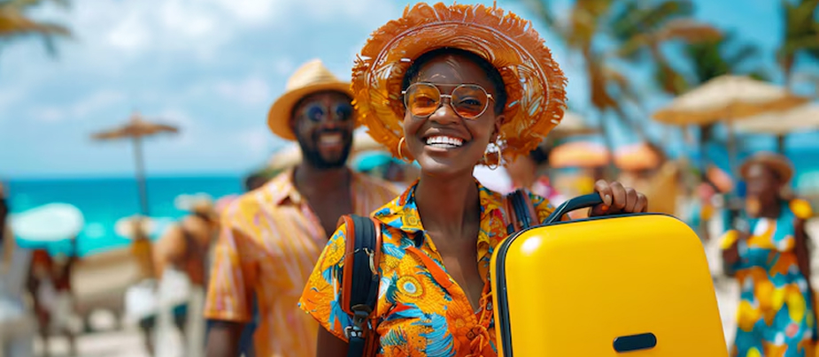

Nigeria offers a wide variety of tourist attractions such as extended rivers, beaches ideal for swimming and other water sports, unique wildlife, vast tracts of unspoiled nature ranging from tropical forests and magnificent waterfalls, to new rapidly growing cities and climatic conditions that are particularly conducive for holidaying.
Other attractions include traditional ways of life preserved in local customs, rich and varied handicrafts and colourful products depicting native arts and lifestyle, as well as the authentic and friendly attitude of many Nigerians. Many of these attractions are however still largely untapped. Visitors in search of fun, exotic or adventurous experiences are encouraged to visit and enjoy these wonderful offers.

Nigeria's tourism and hospitality industry is an important and rapidly growing sector of the economy. The country's rich cultural heritage, diverse natural landscapes, vibrant urban centres and warm, hospitable people provide the foundation for a world-class tourism industry with enormous untapped potential. The Federal Government, through the Federal Ministry of Tourism, has prioritised tourism development as a critical component of its economic diversification strategy, recognising that a well-developed tourism sector can create millions of jobs and generate significant foreign exchange earnings.
A deterrent for many potential Nigeria-bound tourists has been the lack of required modern infrastructural facilities. The current administration has been tackling these impediments to tourism. Local and foreign investors are therefore called upon to come and invest in the abundant tourism potentials in the country. Investment opportunities exist in: development of heritage and cultural tourism resources (including slave trade relics), establishment of museums and preservation of monuments, development of eco-tourism and wildlife tourism, building of tourist lodges and reception centres, provision of cable bus systems for mountain tourism, construction of expedition lodges, establishment of hotels and resorts near waterfalls and temperate areas such as Obudu, Jos and Mambila Plateau, development of water transportation and sports facilities, and development of amusement parks and entertainment facilities.
Nigeria's tourism potential remains among the most underexplored on the African continent. The country offers remarkable diversity for the global visitor: from the ancient walled city of Kano in the north — one of West Africa's oldest urban settlements — to the pristine beaches of the Lagos coastline and the creeks of the Niger Delta; from the breathtaking highland plateaus of Jos and Obudu to the vast Sambisa forest and the shores of Lake Chad in the north-east. Nigeria also has enormous potential in heritage tourism centred on the slave trade routes of Badagry and Calabar, the royal courts of its numerous traditional rulers, and the archaeological sites associated with the Nok, Ife, Benin and Igbo-Ukwu civilisations.
The country's vibrant urban culture — particularly in Lagos, Abuja and Port Harcourt — offers world-class dining, music, fashion, festivals and nightlife that are increasingly attracting visitors from across Africa and beyond. The annual Calabar Carnival (December), the Lagos International Jazz Festival, the Argungu Fishing Festival and the Osun-Osogbo Festival are among the country's most spectacular events, drawing national and international visitors. Investment in tourism infrastructure, marketing and connectivity will be essential to unlocking this vast and largely untapped potential and establishing Nigeria as a leading tourist destination in Africa.
Nigeria's natural landscape offers remarkable diversity for eco-tourists and nature lovers. Yankari National Park in Bauchi State — Nigeria's premier game reserve — is home to elephants, hippos, lions, buffalo, warthogs and over 350 bird species, centred around the natural warm springs of Wikki, which flow at a constant 31°C year-round. The Obudu Mountain Resort in Cross River State offers cool highland temperatures and breathtaking scenery at 1,576 metres above sea level. Kainji Lake National Park in Niger State shelters diverse wildlife along the shores of the Kainji Dam reservoir.
The Gashaka-Gumti National Park — Nigeria's largest national park, spanning 6,700 square kilometres — is home to chimpanzees, lions, elephants and Nigeria's only remaining wild buffalo herds. The Idanre Hills in Ondo State, the Cross River National Park (home to the critically endangered Cross River gorilla), the Ikogosi Warm Springs in Ekiti State, the Oguta Lake in Imo State, the Erin-Ijesha (Olumirin) Waterfalls in Osun State, and the Gurara Falls in Niger State are among the country's most spectacular natural attractions — each representing significant tourism development opportunities.
Nigeria's cultural and historical landscape is extraordinarily rich. The Osun-Osogbo Sacred Grove — a UNESCO World Heritage Site in Osun State — is a living sanctuary of Yoruba spiritual tradition, art and sculpture along the banks of the Osun river, drawing thousands of pilgrims and tourists every year. The Badagry Slave Route in Lagos State preserves the haunting memory of the trans-Atlantic slave trade: the "Point of No Return" — the last point on Nigerian soil from which enslaved people were shipped to the Americas — is a profoundly moving heritage site that draws visitors from the African diaspora worldwide.
The Nok terracottas of Plateau State — dating to 500 BCE and among the oldest sculptural art in sub-Saharan Africa — can be viewed at the National Museum in Jos. The Igbo-Ukwu bronzes in Anambra State, dating to the 9th century CE, pre-date the better-known Benin bronzes and represent an extraordinary example of early African metallurgy. The ancient city walls of Kano — portions dating to the 15th century — are a remarkable feat of pre-colonial urban planning and engineering. The Olumo Rock in Abeokuta, the Sukur Cultural Landscape (a UNESCO World Heritage Site in Adamawa State), the Sungbo's Eredo earthworks near Lagos and the Calabar Museum and Slave History Museum are among the other major cultural tourism assets that draw Nigerian and international visitors.
Nigeria's royal courts are among the most magnificent in Africa and represent some of the continent's most important living heritage sites. The Emir's Palace in Kano — Gidan Rumfa — dating to the 15th century, is the seat of one of West Africa's most powerful traditional rulers. Its distinctive mud-brick architecture, the spectacle of the annual Durbar festival and the Gidan Makama Museum housed within it draw thousands of visitors annually. The Oba's Palace in Benin City — the seat of the ancient Benin Kingdom — is a UNESCO-listed heritage site, housing a treasury of priceless bronze and ivory artworks and serving as the living court of the Oba of Benin.
The Ooni's Palace in Ile-Ife — where the Ooni is regarded as the spiritual father of all Yoruba people — is one of West Africa's most sacred royal seats. The Sultan's Palace in Sokoto, the Alaafin's Palace in Oyo — from which the Oyo Empire once ruled — the Obi of Onitsha's Palace on the banks of the Niger, and the Eze Nri's Palace in Anambra State are among the many royal courts across Nigeria that welcome visitors, conduct heritage tours and offer a unique window into Nigeria's rich and unbroken traditions of traditional governance, ceremony and courtly culture that have endured for centuries.
Nigeria has a network of national museums and monuments preserving its extraordinary cultural heritage, managed by the National Commission for Museums and Monuments (NCMM). The National Museum in Lagos — established in 1957 — houses an unparalleled collection of Nigerian art, including Benin bronzes, Nok terracottas, Ife bronzes and objects from all major Nigerian civilisations. It is one of the most important museums in West Africa. The National War Museum in Umuahia documents the Nigerian Civil War (1967–1970) with a comprehensive collection of military equipment, photographs and archival materials.
The National Museum in Jos showcases the famous Nok sculptures — the oldest known figurative art in sub-Saharan Africa. The Esie Museum in Kwara State houses the world's largest collection of soapstone figures — over 1,000 carved human figures of unknown origin, discovered in the town of Esie. The Gidan Makama Museum in Kano, the National Museum in Benin City, the Combi Museum in Calabar, the Pottery Museum in Abuja and the Living History Museum in Badagry further complement the country's heritage offering, providing a comprehensive and accessible view of Nigeria's vast cultural wealth for Nigerian citizens and international visitors alike.
Nigeria's hospitality sector has grown significantly in recent decades, driven by rising incomes, a growing middle class and increasing inbound business travel. Major international hotel brands operate flagship properties in Abuja and Lagos: the Transcorp Hilton Abuja, the Sheraton Abuja Hotel, the Radisson Blu Anchorage Hotel in Lagos, the Marriott Lagos, the Eko Hotels and Suites on Victoria Island, the Four Points by Sheraton, Protea Hotels by Marriott and Movenpick Hotels are among the country's flagship accommodation properties serving business and leisure travellers.
Nigeria's restaurant scene — particularly in Lagos — has exploded in recent years, with world-class dining establishments drawing culinary tourists from across the continent and beyond. Restaurants and hospitality experiences in Lagos and Abuja have earned Nigeria a growing reputation as one of Africa's most exciting food cities. Boutique hotels, eco-lodges and cultural tourism accommodations are increasing near major heritage sites and national parks, offering investors and travellers a growing range of quality options. The Federal Government actively encourages investment in hotel and resort development, particularly near under-served tourist destinations and cultural heritage sites across the 36 states.
Nigeria has produced some of the world's greatest athletes and has a proud record of sporting achievement on the continental and global stage. The Super Eagles — Nigeria's national football team — is among Africa's most successful, having qualified for the FIFA World Cup six times and won the Africa Cup of Nations three times (1980, 1994, 2013). Nigeria's Under-17 national team (the Golden Eaglets) has won the FIFA U-17 World Cup a record five times — more than any other nation. Nigerian athletes have won multiple Olympic medals in sprinting, long jump, weightlifting and shooting, and have competed at every Summer Olympic Games since 1952.
The Nigeria Basketball Federation's national teams — the D'Tigers (men) and D'Tigress (women) — have risen to become Africa's top-ranked sides and forces at the global level. In athletics, Tobi Amusan became the world record holder in the 100m hurdles in 2022, and Brume Ese won silver at the Tokyo 2020 Olympics in the long jump. Sports development remains a national priority, with investment in sports infrastructure, school sports programmes and the National Sports Commission working to build on Nigeria's proud athletic legacy and use sport as a vehicle for youth development, national unity and global engagement.
Football (soccer) is by far the most popular sport in Nigeria, played at every level from village pitches to the Nigerian Premier Football League (NPFL) — the country's top division, which includes clubs such as Enyimba FC (two-time CAF Champions League winners), Heartland FC and Rivers United. The league serves as a pipeline for the national team and has produced dozens of players who have gone on to careers in Europe's top leagues, including the English Premier League, La Liga, Serie A and the Bundesliga.
Basketball has grown rapidly as a professional and recreational sport, with the NBA Africa programme investing heavily in academies and events across the country. Athletics — particularly sprinting, long jump and middle-distance running — has produced world champions and Olympians. Boxing has a long tradition, with champions including Dick Tiger (two-time world champion in two weight classes) and Samuel Peter. Traditional sports are also cherished: dambe (Hausa boxing), irin (Yoruba wrestling), ayo olopon (a strategic board game) and mancala games are deeply embedded in Nigerian culture. Cricket, swimming, tennis, golf and polo also have significant followings among Nigeria's urban communities, with Nigeria being a full member of the International Cricket Council.
Nigeria is a significant player on the international stage, maintaining a vast network of diplomatic missions worldwide.
See More